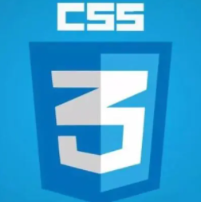

Vue.js渐进式 JavaScript 框架
Vue.js是构建Web界面的JavaScript库，提供数据驱动的组件，还有简单灵活的API，使得MVVM更简单。 主要特性：可扩展的数据绑定，将普通的JS对象作为model，简洁明了的API ，组件化 UI 构建和配合别的库使用。

CSS3层叠样式表
CSS3的新特征有很多，例如圆角效果、图形化边界、块阴影与文字阴影、使用RGBA实现透明效果、渐变效果、使用@Font-Face实现定制字体、多背景图、文字或图像的变形处理（旋转、缩放、倾斜、移动）、多栏布局、媒体查询等。
LiunxUnix操作系统
Linux，全称GNU/Linux，是一套免费使用和自由传播的类Unix操作系统，是一个基于POSIX的多用户、多任务、支持多线程和多CPU的操作系统。伴随着互联网的发展，Linux得到了来自全世界软件爱好者、组织、公司的支持。
Nginx高性能 Web 服务器
Nginx（发音同 engine x）是一款轻量级的 Web 服务器/反向代理服务器及电子邮件（IMAP/POP3）代理服务器，并在一个 BSD-like 协议下发行，可以在 UNIX、GNU/Linux、BSD、Mac OS X、Solaris，以及 Microsoft Windows 等操作系统中运行。
MyBatis-PlusMyBatis 的增强工具
MyBatis-Plus (opens new window)（简称 MP）是一个 MyBatis (opens new window)的增强工具，在 MyBatis 的基础上只做增强不做改变，为简化开发、提高效率而生。